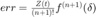

Math 315 Lab 4
The following lab examines the Runge phenomenon for 5 different ways of polynomial interpolation: Vandermonde / Power Series, Newton, Newton with Divided Differences, Lagrange, and Chebyshev interpolation. I will use these different methods of interpolation to approximate the exponential function and calculate the maximum absolute error of these approximations on the interval [-1, 1].
Contents
- Vandermonde / Power Series Interpolation
- Newton Textbook Interpolation
- Newton Divided Differences Interpolation
- Lagrange Interpolation
- Chebyshev Interpolation
- Equally Spaced Data Points on the Interval [-1, 1]
- Chebyshev Points on the Interval [-1, 1]
- Textbook Newton vs. Divided Difference Newton Interpolation Errors
- Vandermonde / Power Series Interpolation Error
- Lagrange Interpolation Error
- Chebyshev Interpolation Error
Vandermonde / Power Series Interpolation
The following code takes in nodes (x, f) and approximation points xx to outputs approximated values y by creating an interpolating polynomial through Vandermonde / Power Series interpolation.
disp(fileread('vandermonde.m'));
function [y] = vandermonde(x, f, xx)
v = vander(x);
p = v\f;
y = polyval(p,xx);
end
Newton Textbook Interpolation
The following code takes in nodes (x, f) and approximation points xx to outputs approximated values y by creating an interpolating polynomial through the textbook version of Newton interpolation.
disp(fileread('newton.m'));
function [y, b] = newton(x, f, xx)
n = length(x);
b = zeros(1, n);
b(1) = f(1);
for k = 2:n
num = f(k) - b(1);
for j = 2:k-1
multiplier = (x(k) - x(1));
for i = 2:j-1
multiplier = multiplier .* (x(k) - x(i));
end
num = num - b(j) .* multiplier;
end
den = 1;
for j = 1:k-1
den = den .* (x(k) - x(j));
end
b(k) = num ./ den;
end
y = zeros(1, length(xx)) + b(n);
for i = n-1:-1:1
% disp(b(i))
y = b(i) + (xx - x(i)) .* y;
end
end
Newton Divided Differences Interpolation
The following code takes in nodes (x, f) and approximation points xx to outputs approximated values y by creating an interpolating polynomial through the divided differences version of Newton interpolation.
disp(fileread('newton_divided_diff.m'));
function [ y, d ] = newton_divided_diff( x, f, xx )
n = length(x);
d = f;
for k = 2:n
for j = n:-1:k
d(j) = (d(j) - d(j-1)) / (x(j) - x(j-k+1));
% disp(d(j));
end
end
y = zeros(1, length(xx));
y = y+d(n);
for k = n-1:-1:1
y = d(k) + (xx - x(k)) .* y;
end
end
Lagrange Interpolation
The following code takes in nodes (x, f) and approximation points xx to outputs approximated values y by creating an interpolating polynomial through Lagrange interpolation.
disp(fileread('lagrange.m'));
function [y] = lagrange(x, f, xx)
y = 0;
n = length(x);
for k = 1:n
l_num = 1;
l_den = 1;
for j = 1:k-1
l_num = l_num .* (xx - x(j));
l_den = l_den .* (x(k) - x(j));
end
for j = k+1:n
l_num = l_num .* (xx - x(j));
l_den = l_den .* (x(k) - x(j));
end
l = l_num / l_den;
y = y + f(k) * l;
end
end
Chebyshev Interpolation
The following code takes in nodes (x, f) and approximation points xx to outputs approximated values y by creating an interpolating polynomial through Chebyshev interpolation.
disp(fileread('chebyshev.m'));
function [T, y] = chebyshev(x_data, f_data, x) % % y = chebfit(x_data, f_data, x); % % Construct and evaluate a Chebyshev representation of the % polynomial that interpolates the data points (x_i, f_i): % % p = b(1)*T_0(x) + b(1)*T_1(x) + ... + b(n)T_N(x) % % where n = N+1, and T_j(x) = cos(j*acos(x)) is the jth Chebyshev % polynomial. % n = length(x_data); xmax = max(x_data); xmin = min(x_data); xx_data = (2*x_data - xmax - xmin)./(xmax - xmin); T = zeros(n, n); T(:,1) = ones(n,1); T(:,2) = xx_data; for j = 3:n T(:,j) = 2*xx_data.*T(:,j-1) - T(:,j-2); end b = T \ f_data; xx = (2*x - xmax - xmin)/(xmax - xmin); y = zeros(size(x)); for j = 1:n y = y + b(j)*cos( (j-1)*acos(xx) ); end
Equally Spaced Data Points on the Interval [-1, 1]
The following code generates 100 equally spaced nodes (x, e^x) from -1 to 1. It will then create an interpolating polynomial using the different interpolation methods. Then, 102500 sample points are then chose to test the interpolating polynomial and the maximum absolute error is calculated and put together in the table below.
close all; warning('off', 'MATLAB:nearlySingularMatrix'); vandermonde_err = zeros(10, 1); newton_err = zeros(10, 1); newton_divided_diff_err = zeros(10, 1); lagrange_err = zeros(10, 1); chebyshev_err = zeros(10, 1); for n = 10:10:100 x = linspace(-1, 1, n)'; f = exp(x); xx = linspace(-1, 1, 1025.*n); t = linspace(-1, 1, 1000); % Vandermonde / Power Series Interpolation err = max(abs(vandermonde(x, f, xx) - exp(xx))); vandermonde_err(n ./ 10) = err; % disp(err); % f1 = figure(1); % plot(t, vandermonde(x, f, t)); % Newton Textbook Interpolation err = max(abs(newton(x, f, xx) - exp(xx))); newton_err(n ./ 10) = err; % disp(err); % f2 = figure(2); % plot(t, newton(x, f, t)); % Netwon with Divided Differences Interpolation err = max(abs(newton_divided_diff(x, f, xx) - exp(xx))); newton_divided_diff_err(n ./ 10) = err; % disp(err); % f3 = figure(3); % plot(t, newton_divided_diff(x, f, t)); % Lagrange Interpolation err = max(abs(lagrange(x, f, xx) - exp(xx))); lagrange_err(n ./ 10) = err; % disp(err); % f4 = figure(4); % plot(t, lagrange(x, f, t)); % Chebyshev Interpolation [T,y] = chebyshev(x, f, xx); err = max(abs(y - exp(xx))); chebyshev_err(n ./ 10) = err; % disp(err); % f5 = figure(5); % plot(t, chebyshev(x, f, t)); end vandermonde_err = categorical(compose('%.7e', round(vandermonde_err, 7, ... 'significant'))); newton_err = categorical(compose('%.7e', round(newton_err, 7, 'significant'))); newton_divided_diff_err = categorical(compose('%.7e', round(newton_divided_diff_err, ... 7, 'significant'))); lagrange_err = categorical(compose('%.7e', round(lagrange_err, 7, 'significant'))); chebyshev_err = categorical(compose('%.7e', round(chebyshev_err, 7, 'significant'))); T1 = table(linspace(10,100,10)', vandermonde_err, newton_err, newton_divided_diff_err, ... 'VariableNames', {'n', 'Vandermonde', 'Newton', 'Newton Divided Difference'}); disp(T1); T2 = table(linspace(10,100,10)', lagrange_err, chebyshev_err, 'VariableNames', ... {'n', 'Lagrange', 'Chebyshev'}); disp(T2);
n Vandermonde Newton Newton Divided Difference
___ _____________ _____________ _________________________
10 3.8500810e-09 3.8500840e-09 3.8500830e-09
20 2.4069640e-13 3.5260680e-13 7.6383340e-14
30 1.8991340e-10 7.5025600e-11 3.6803670e-11
40 1.2017770e-07 1.8356500e-08 3.0007160e-08
50 7.1502350e-06 1.8936330e-05 1.2119690e-05
60 1.8725160e-02 6.1458640e-03 2.3528970e-02
70 1.0174630e+02 2.1747270e+04 1.4942710e+01
80 2.1759130e+05 7.6939990e+09 1.4798190e+04
90 1.9083950e+09 7.2711500e+15 9.5206610e+08
100 9.1045340e+13 6.0356540e+21 1.9562280e+13
n Lagrange Chebyshev
___ _____________ _____________
10 3.8500810e-09 3.8500820e-09
20 1.6906480e-12 5.9990900e-13
30 8.2540950e-10 5.0064400e-11
40 4.6020290e-07 5.9304010e-08
50 4.8220850e-04 2.7951690e-04
60 4.3500440e-01 2.7934060e-02
70 3.7496930e+02 2.9987960e+01
80 2.3503340e+05 1.3600450e+01
90 2.7500180e+08 8.8280160e+00
100 2.4248560e+11 3.8543940e+01
Chebyshev Points on the Interval [-1, 1]
The following code generates 100 nodes (x, e^x) using the Chebyshev method for generating points. This distribution will have more points near the ends of the interval and less near the center. Then, using the different interpolation methods, an interpolating polynomial is created. These interpolating polynomials are then tested with 102500 test points and the maxmimum absolute error is calculated. These maximums are then put together in the table below.
close all; warning('off', 'MATLAB:nearlySingularMatrix'); vandermonde_err = zeros(10, 1); newton_err = zeros(10, 1); newton_divided_diff_err = zeros(10, 1); lagrange_err = zeros(10, 1); chebyshev_err = zeros(10, 1); for n = 10:10:100 i = linspace(1, n, n); a = -1; b = 1; x = (((b + a) ./ 2) - ((b - a) ./ 2) .* cos((2 .* i + 1) .* pi ./ ... (2 .* n + 2)))'; f = exp(x); xx = linspace(-1, 1, 1025.*n); t = linspace(-1, 1, 1000); % Vandermonde / Power Series Interpolation err = max(abs(vandermonde(x, f, xx) - exp(xx))); vandermonde_err(n ./ 10) = err; % disp(err); % f1 = figure(1); % plot(t, vandermonde(x, f, t)); % Newton Textbook Interpolation [y, b] = newton(x, f, xx); err = max(abs(y - exp(xx))); newton_err(n ./ 10) = err; % disp(err); % f2 = figure(2); % plot(t, newton(x, f, t)); % Netwon with Divided Differences Interpolation [y, d] = newton_divided_diff(x, f, xx); err = max(abs(y - exp(xx))); newton_divided_diff_err(n ./ 10) = err; % disp(err); % f3 = figure(3); % plot(t, newton_divided_diff(x, f, t)); % Lagrange Interpolation err = max(abs(lagrange(x, f, xx) - exp(xx))); lagrange_err(n ./ 10) = err; % disp(err); % f4 = figure(4); % plot(t, lagrange(x, f, t)); % Chebyshev Interpolation [T,y] = chebyshev(x, f, xx); err = max(abs(y - exp(xx))); chebyshev_err(n ./ 10) = err; % disp(err); % f5 = figure(5); % plot(t, chebyshev(x, f, t)); end vandermonde_err = categorical(compose('%.7e', round(vandermonde_err, 7, ... 'significant'))); newton_err = categorical(compose('%.7e', round(newton_err, 7, 'significant'))); newton_divided_diff_err = categorical(compose('%.7e', round(newton_divided_diff_err, ... 7, 'significant'))); lagrange_err = categorical(compose('%.7e', round(lagrange_err, 7, 'significant'))); chebyshev_err = categorical(compose('%.7e', round(chebyshev_err, 7, 'significant'))); T1 = table(linspace(10,100,10)', vandermonde_err, newton_err, newton_divided_diff_err, ... 'VariableNames', {'n', 'Vandermonde', 'Newton', 'Newton Divided Difference'}); disp(T1); T2 = table(linspace(10,100,10)', lagrange_err, chebyshev_err, 'VariableNames', ... {'n', 'Lagrange', 'Chebyshev'}); disp(T2);
n Vandermonde Newton Newton Divided Difference
___ _____________ _____________ _________________________
10 2.6972520e-08 2.6972520e-08 2.6972520e-08
20 2.2759570e-15 8.8817840e-16 8.8817840e-16
30 1.0658140e-14 7.2719610e-15 1.4988010e-15
40 1.9095840e-14 7.6605390e-15 9.9364960e-15
50 2.9865000e-14 1.6234970e-10 5.8359540e-11
60 5.4160010e-12 1.3197300e-05 2.8741780e-06
70 8.5729110e-10 6.5922410e+00 4.1672570e-01
80 1.9435480e-06 2.8392880e+04 2.9230400e+04
90 5.7297200e-03 1.7028360e+09 4.3492790e+08
100 8.3667620e+01 7.1864990e+15 4.0966120e+13
n Lagrange Chebyshev
___ _____________ _____________
10 2.6972510e-08 2.6972520e-08
20 4.8294700e-14 2.2204460e-15
30 5.4067860e-14 3.1086240e-15
40 5.5178080e-14 4.5963230e-14
50 2.0317080e-13 8.8928860e-14
60 3.7414520e-13 1.1102230e-14
70 2.2604140e-13 1.3233860e-13
80 2.3658850e-13 2.6173510e-13
90 1.0169640e-12 1.7746920e-13
100 7.6183500e-13 2.0278220e-13
Textbook Newton vs. Divided Difference Newton Interpolation Errors
The textbook implementation of Newton interpolation creates the least accurate interpolating polynomial of e^x for both equally spaced and Chebyshev nodes. The divided difference implementation of Newton interpolation creates a much better performing polynomial that approximates e^x. It ties for second worst with the Vandermonde / Power Series interpolating polynomial for equally spaced nodes, however it is worse than the Vandermonde / Power Series interpolating polynomial for Chebyshev nodes. This is because the textbook version uses the previously calculated polynomial to calculate the coefficient whereas the divided difference method recursively uses the previous two divided differences to calculate the next one. We can see this by calculating the differences between the coefficients from the textbook Newton interpolation and the divided differences from the divided differences version of Newton interpolation.
x = linspace(-1, 1, 100)'; f = exp(x); xx = 0.994; [y, b] = newton(x, f, xx); [y, d] = newton_divided_diff(x, f, xx); max_diff = 0; b_m = 0; d_m = 0; for i=1:length(b) if abs(b(i) - d(i)) > max_diff b_m = b(i); d_m = d(i); end end fprintf('Difference between polynomial and divided difference Newton interpolation: %e\n', abs((b_m - d_m) ./ d_m));
Difference between polynomial and divided difference Newton interpolation: 6.409826e+11
This error is around 10^11. Assuming the smallest (x-xi) ~= 0.01 = 10^-2, the error is around 10^9, which is approximately the difference seen between the maximum error of textbook's Newton interpolation and the divided-difference Newton interpolation at n=100.
The same process can be done with the Chebyshev points to compute the maximum difference in error between the textbook implementation and divided differences implementation of Newton interpolation.
n = 100; i = linspace(1, n, n); a = -1; b = 1; x = (((b + a) ./ 2) - ((b - a) ./ 2) .* cos((2 .* i + 1) .* pi ./ ... (2 .* n + 2)))'; f = exp(x); xx = 0.994; [y, b] = newton(x, f, xx); [y, d] = newton_divided_diff(x, f, xx); max_diff = 0; b_m = 0; d_m = 0; for i=1:length(b) if abs(b(i) - d(i)) > max_diff b_m = b(i); d_m = d(i); end end fprintf('Difference between polynomial and divided difference Newton interpolation: %e\n', abs((b_m - d_m) ./ d_m));
Difference between polynomial and divided difference Newton interpolation: 8.699348e+29
The result above is unreasonably large compared to the difference between the errors of the textbook and divided differences implementation of Newton interpolation. This suggests that likely an equally large negative difference in coefficient could have occured to cancel ou this large positive difference.
Vandermonde / Power Series Interpolation Error
The Vandermonde / Power Series interpolating polynomial ties for the second worst approximation of e^x for equally spaced nodes and is 3rd best for Chebyshev points. It has an error bounded by the condition number of the Vandermonde matrix times machine epsilon.
x = linspace(-1, 1, 100)'; i = linspace(1, 100, 100); a = -1; b = 1; x_c = (((b + a) ./ 2) - ((b - a) ./ 2) .* cos((2 .* i + 1) .* pi ./ ... (2 .* 100 + 2)))'; fprintf('Error bound for equally spaced points Vandermonde: %e\n', cond(vander(x)) * eps()); fprintf('Error bound for Chebyshev points Vandermonde: %e\n', cond(vander(x_c)) * eps());
Error bound for equally spaced points Vandermonde: 2.736128e+04 Error bound for Chebyshev points Vandermonde: 1.213174e+05
For the Chebyshev points, the error is well below the error bound for the GEPP, but for the equally spaced points, the error is above the error bound for GEPP. This is likely because of the Runge phenomenon that states the error for an interpolating polynomial increases arbitrarily as n approaches infinity.
Lagrange Interpolation Error
The Lagrange interpolating polynomial has the second best approximation of e^x for both equally spaced nodes and Chebyshev points. We can calculate the error bound for Lagrange interpolation by the formula below.

Chebyshev Interpolation Error
The Chebyshev interpolating polynomial has the best approximation of e^x for both equally spaced nodes and Chebyshev points. It's error can be bounded by the error of the GEPP subprocess that occurs in the coefficient calculations. The error will be bounded by the condition number of the matrix T times machine epsilon.
x = linspace(-1, 1, 100)'; i = linspace(1, 100, 100); a = -1; b = 1; x_c = (((b + a) ./ 2) - ((b - a) ./ 2) .* cos((2 .* i + 1) .* pi ./ ... (2 .* 100 + 2)))'; xx = 0.994; [T,y] = chebyshev(x, f, xx); [T_c,y_c] = chebyshev(x_c, f, xx); fprintf('Error bound for equally spaced points Chebyshev Interpolation: %e\n', cond(T) * eps()); fprintf('Error bound for Chebyshev points Chebyshev Interpolation: %e\n', cond(T_c) * eps());
Error bound for equally spaced points Chebyshev Interpolation: 1.022029e+01 Error bound for Chebyshev points Chebyshev Interpolation: 1.382119e-14
These error bounds quite accurately represents error found in the Chebshev interpolating polynomial of e^x. Since they are within 1 decimal place of the actual error, this suggests that the main source of error was from the GEPP subprocess that is used to calculate the coefficients of the polynomial.